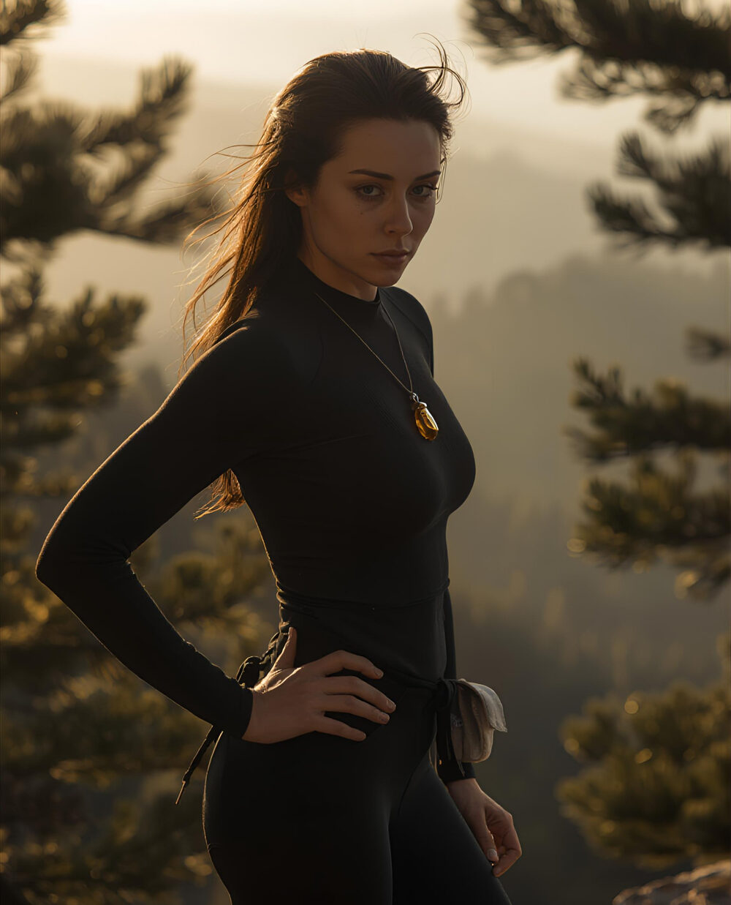

Eight guides, eight walks of life
Each one a master of one walk of life.
Characters from the stories, each leading one week of the path. The live circles are real people.

Austėja
Lithuania
Walk of life: Sport and the body: a mountain runner who coaches champions. Leads: The calm is not made out there. Language door: Lithuanian.
Background. "She was on the ridge before the sun. This was her hour." Before the heritage center opened, before her daughter woke, before her grandmother needed her tea. Her grandmother Ona raised her after her mother died of grief; Ona is seventy-four and still walks to the forest every morning. Her daughter Ugnė is eleven and draws oak trees. Ugnė's father, Kenji, was a champion swimmer who died training. Austėja runs in a long black technical top, and wears amber at her throat.
Who she is. The one who stores the calm on ordinary mornings, so it is there on the hard day. She does not rescue anybody. She stands there being whole.
Nalu
Hawaiʻi
Walk of life: The sea and the crisis: a navigator and teacher. Leads: The one who does not startle. Language door: English, with Hawaiian.
Background. A navigator, Nalu Kealoha-Nakamura, author of Reading the Swell. Twenty years as his teacher's student; the teacher died at ninety-one. He has fished from the same boat for eighteen years, is good with an engine, and lives in a house his grandfather built. He charges companies "a lot" and pays his own way to a village losing its shoreline. When a man insulted his grandmother's people, he finished his sentence and "walked out at the normal speed." On leading in a storm: "Then forty people fall apart, because they're reading me." And: "You cannot get grand in a small boat at four in the morning."
Who he is. The steadiest person in any room, because he practiced on the calm days.
Tonas
Turtle Island
Walk of life: Leadership and business: the executive learning to sit down. Leads: The stone and the breath. Language door: English.
Background. The man "who had everything the world measures," with an executive director, consultants and a keynote in Geneva, "and who is still, on most days, learning to sit down." He rowed in Japan as a young man. He carried his grandfather's book across an ocean, wrapped in Ada's storm-pattern weaving. He ran the hundred in the Alps with a stone in his fist.
Who he is. The leader who was blocked, and found that the tools he needed had been handed to him as a child.
Satoshi
Japan
Walk of life: Teams and craft: the stroke who sets the crew’s rhythm. Leads: Read the weather, not the insult. Language door: Japanese.
Background. He was the stroke of the club boat when Tonas rowed in Japan: a decade older, "the engine of the boat, the one who set the rhythm and took the green kid under his wing." Now in his forties, "bald, with a wrestler's build and a kind face." He enters Tonas in a regatta on the Tama River. "I said you're not terrible. That's the highest compliment I give." The Warrior-Samurai voice sits beside his chapters: the first arrow you did not choose, and the second arrow you fire into yourself.
Who he is. The one who sets the rhythm for everyone else, and carries the old warrior disciplines into ordinary life.
Chariya
Thailand
Walk of life: Food and land: a terrace farmer. Leads: Sleep, movement, food, people. Language door: Thai, later.
Background. She farms the rice terraces her people cut into the hills. "The water arrives at the top field first. Everything we are is built on that one fact." She saw floods and drought in the same season, and her brother leave for the city. Her advice to anyone designing how people share: "Put them in the room together. Every year. Forever." Her token is a rice seed. Her teaching: "Honor the mother and she returns."
Who she is. The plainest speaker at the fire. She keeps a water-sharing way that has worked for something like a thousand years, and she will not let anyone call it magic.
Illary
The high Andes
Walk of life: Family and seed: a mother and seed keeper. Leads: Carry it home. Language door: Spanish (and Quechua), for México, Guatemala and the Andes.
Background. In her grandmother's time the glacier "came down to the third stone." Her people carried seed up the mountain for generations, planting higher as the warmth followed them, until "There is no more up." She teaches ayni: when frost killed her grandmother's plot, three families brought seed up the mountain. "The giving was the storage," she said. "There was no other vault." On companies: "Then we do not build a company that pays. We build one that cannot leave." Her token is a carved stone llama. Her teaching: "Walk toward. Do not scatter."
Who she is. A seed keeper and a mother. She teaches that what you give away is what keeps you.
Kiprono
The Rift Valley, East Africa
Walk of life: Elders and community: a herder and elder. Leads: Teach one, feed the keepers, accept the unfinished. Language door: later.
Background. A herder. "The river ran every year of my grandfather's life." He had forty-one cattle, "and I had a name for each one." Drought "is an old visitor and we knew how to seat him." The council gathered at Kiprono's tree. His token is a beaded bracelet. His teaching: "The water is always waiting."
Who he is. The elder who knows every animal by name and thinks in generations. He teaches the long line: you carry it far enough to hand on.
Aoi
Japan
Walk of life: Technology and companies: the engineer who walked away. Leads: For Your Work, the six readings, and the technology question. Language door: Japanese.
Background. Aoi, "who built the machines and then walked away from them." She speaks about the minds: "We had built a world that rang the alarm bell in a human body all day long." Her token is a black go stone. Her teaching: "Point the machine at the agreements." She gave the council "the tool that learned to keep a secret instead of selling one." She is also the one who teases Te Rangi until he lets a point go.
Who she is. The engineer who walked away, now teaching companies and boards to point their tools at their agreements. She is the natural voice for the technology world.